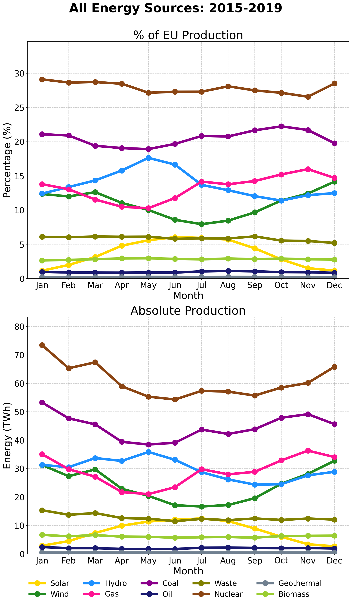
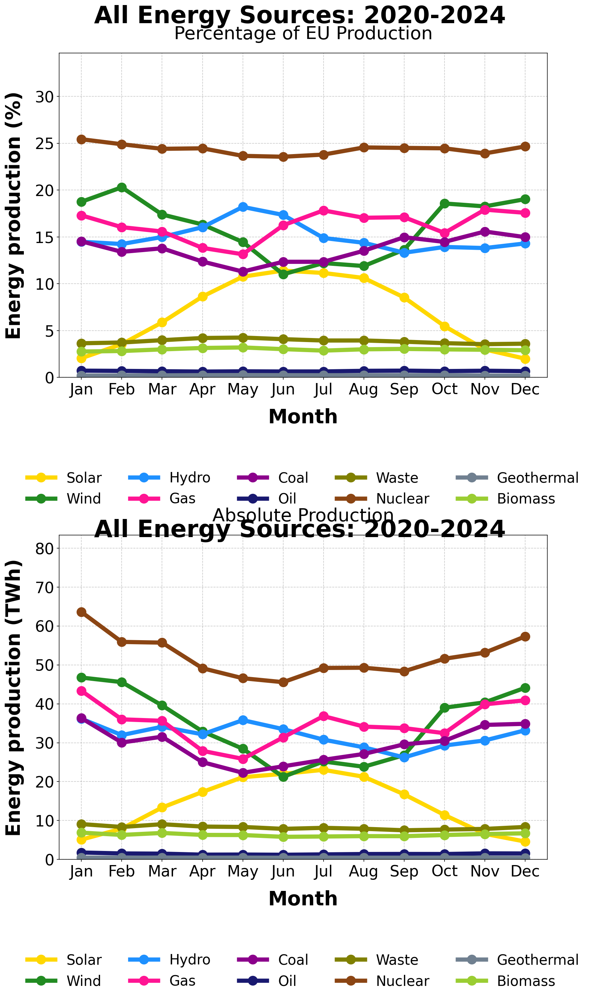
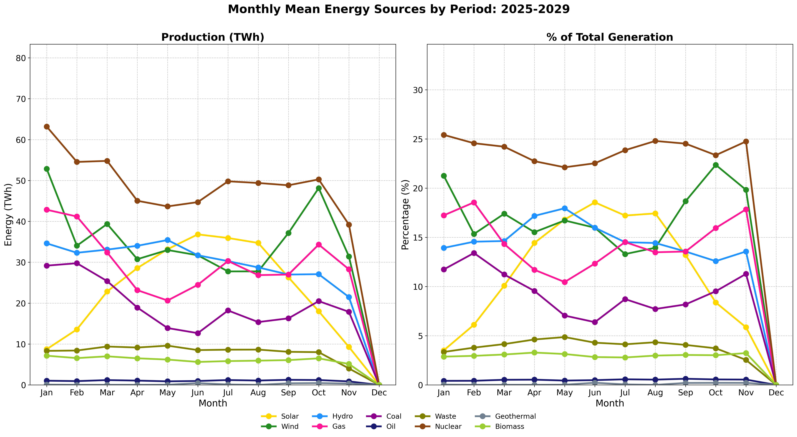
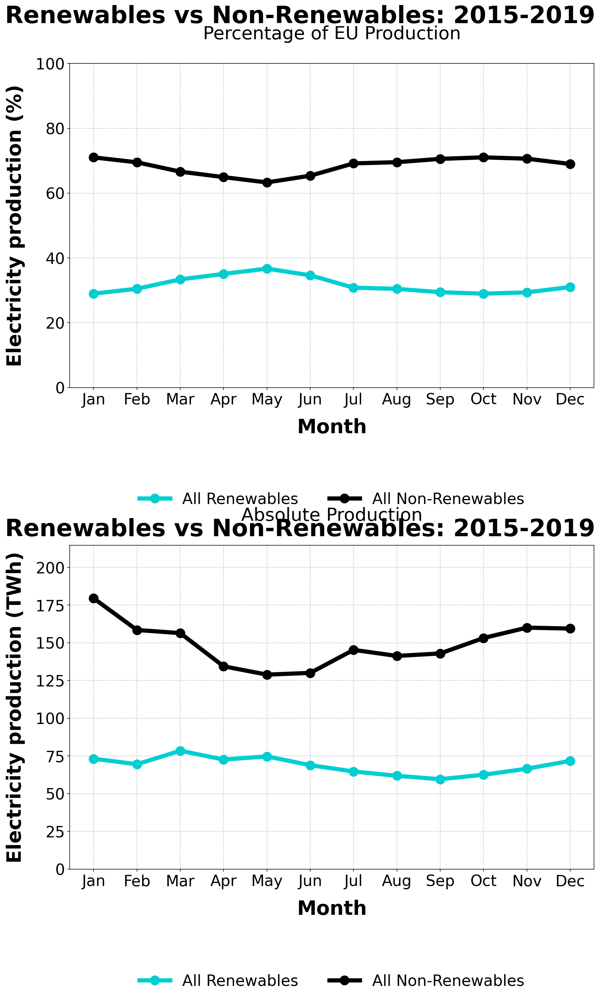
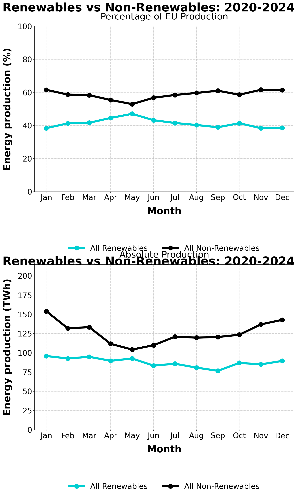
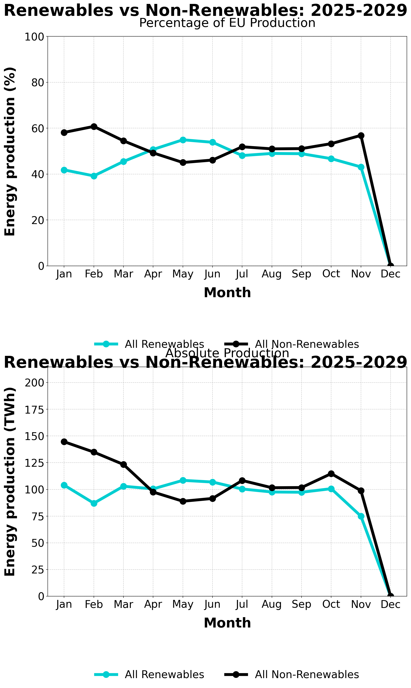
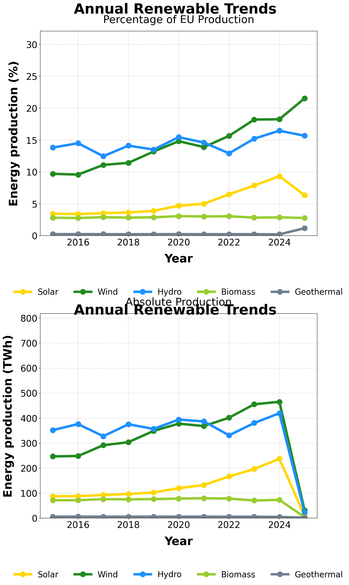
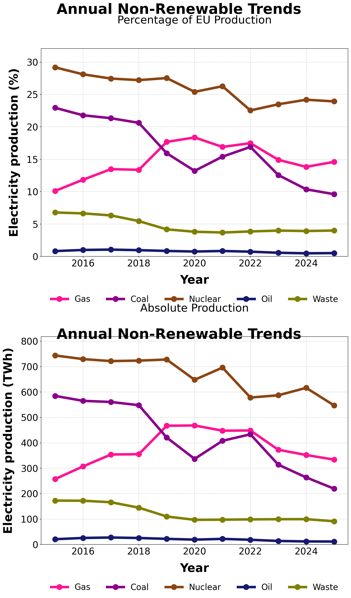
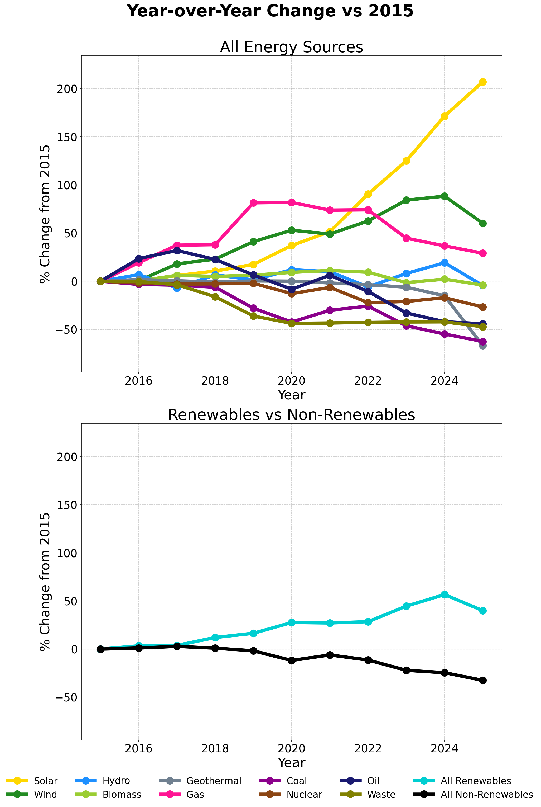

Historical Energy Analysis
Long-term trends and energy transition data (2015-2025)
Period Comparisons
Monthly mean production by 5-year periods, showing evolution of the energy mix
All Energy Sources: 2015-2019
Baseline period showing the starting point of Europe's energy transition
All Energy Sources: 2020-2024
Acceleration period with significant renewable growth and fossil fuel reduction
All Energy Sources: 2025-2029
Current period (partial data) showing continued renewable expansion
Renewable vs Non-Renewable: 2015-2019
Starting period with non-renewables dominating the energy mix
Renewable vs Non-Renewable: 2020-2024
Crossover period with renewables rapidly catching up to non-renewables
Renewable vs Non-Renewable: 2025-2029
Current period showing renewables approaching or exceeding 50% in many months
Annual Evolution
Year-by-year trends showing the transformation of Europe's energy system
Annual Renewable Energy Trends
Solar and wind showing exponential growth, while hydro remains relatively stable
Annual Non-Renewable Energy Trends
Coal declining sharply, gas fluctuating with market conditions, nuclear relatively stable
The Energy Transition

The big picture: renewables rising, non-renewables falling - Europe's energy transition in action
Year-over-Year Change vs 2015 Baseline
Percentage change from 2015 baseline showing dramatic renewable growth and fossil fuel decline
Key Findings
- Renewable Growth: Solar and wind have more than doubled since 2015
- Coal Phase-Out: Coal generation has declined by over 50% in the past decade
- Seasonal Patterns: Wind and solar complement each other seasonally
- Energy Transition: Renewables now approach or exceed 50% in many periods
- Nuclear Stability: Nuclear remains a significant baseload contributor
- Gas Fluctuation: Natural gas acts as a flexible backup during transition